Bienvenue sur la page de candidature citoyenne de Volt France !
1. Volt, c'est quoi exactement ?
www.volteuropa.org est un mouvement politique citoyen fondé à la suite du référendum sur le Brexit actif dans 32 pays - avec, à ce jour des partis politiques constitué dans 12 pays, dont la France. L’objectif de cet appel à candidatures est de présenter une liste citoyenne véritablement représentative et démocratiquement choisie aux européennes 2019.
Prêt à vous engager pour l’Europe? Voyez comment vous porter candidat !
J'ai besoin d'un peu plus d'informations...
Nos politiques sont cadrées par le respect des valeurs suivantes :
-
Dignité Humaine
Nous croyons en l’inaltérable dignité de l’être humain. Ce respect et cette valorisation de chaque être humain est au coeur de notre conception politique. Nous croyons qu’aucun être humain n’est le même qu’un autre et que cette diversité enrichit notre société.
-
Égalité
Nous croyons en le droit de chacun d’être capable de décider de son propre destin, quelles que soient leur origine ou leurs valeurs. Nous croyons que chaque être humain doit être en mesure de débloquer totalement leur potentiel selon leur propre définition, qui qu’ils soient. Nous croyons que chacun doit être capable de participer activement à la société.
-
Justice
Par défaut, tout le monde est égal devant la loi, et les lois ne doivent pas viser des individus. Nous combattons toute forme de discrimination car nous pensons que chaque être humain doit être capable de dévoiler l’intégralité de son potentiel, peu importe qui ils sont. De plus, les citoyens doivent pouvoir croire en la fiabilité et en la justice de leur État.
-
Liberté
Nous croyons que l’individu doit être libre de vivre sa liberté et d’exprimer sa personnalité, tant qu’elle n’empiète pas sur les droits d’un autre. La personne n’est pas seulement un citoyen, mais aussi un individu privé, qui doit être en mesure de vivre leur potentiel en dehors de la dimension politique. De plus, l’Etat doit toujours préférer informer les citoyens et leur permettre plutôt que les forcer.
-
Solidarité
Nous sommes l'Europe et l'Europe est nous. Si nous comprenons que notre futur individuel est intrinsèquement lié à la destinée de tous les autres européens, nous pouvons pleinement comprendre que la solidarité est au fondement de notre société européenne. Nous croyons que la solidarité devrait guider nos actes individuels et collectifs, et par la même nos politiques. Aucun citoyen, aucune région, aucun pays ne doivent être laissés de côté.
-
Soutenabilité
Notre objectif est de progresser vers un meilleur futur, ce qui explique pourquoi nous pensons que la soutenabilité est un élément-clé. Nos économies, notre comportement individuel, et l’administration de nos Etats doivent être construits durablement, en termes de nature, de finance, ou de n’importe quelles autres ressources communes.
... et nous travaillons au niveaux Européen, nationaux et locaux dans les cinq et un défis suivants:
-
L'État Intelligent
Les “États intelligents” doivent adopter de nouveaux outils pour gagner la confiance de leurs citoyens à travers une gouvernance responsable, transparente et efficace. Nous investirons dans notre futur commun, comprenant des systèmes d’éducation innovants, un système de santé de qualité. Ensemble, nous utiliserons la technologie pour une prospérité commune.
-
La Renaissance Economique
Les économies européennes ont besoin de devenir le moteur du progrès de la société et permettre un niveau de vie décent pour chacun. Cela requiert des politiques pour réduire la bureaucratie, renforcer le marché du travail, raviver l’innovation dans nos économies, investir dans une productivité intelligente et durable et s’attaquer au chômage et créer un système social et fiscal européen plus unifié.
-
Égalité Sociale
Les citoyens et résidents de l’Union européenne doivent se voir garantir des droits et opportunités égaux, et les droits de l’Homme doivent être respectés et appliqués ! Pour s’assurer de cela, nous souhaitons introduire des politiques s’attaquant à tous les types d’inégalités et de discriminations, réduisant la pauvreté et fournissant un accès aux besoin fondamentaux. Plus important encore, personne ne doit être laissé de côté !
-
Équilibre global
L’Europe a besoin d’assumer la responsabilité pour son rôle dans les challenges globaux, en particulier ceux concernant le changement climatique, la sécurité alimentaire, la santé publique, la migration et les crise de réfugiés. Nous avons pour but de mener des actions afin d’éradiquer la pauvreté, générer des emplois, construire une économie circulaire, assurer un commerce juste, sécuriser des moyens de subsistance et construire des infrastructures pour un développement et une croissance durables.
-
Responsabilisation des citoyens
Ce challenge montre à quel point les citoyens peuvent avoir une influence plus directe sur leur gouvernement, quel genre d’informations les gouvernements devraient publier et comment les citoyens peuvent être informés de manière optimale afin de participer à la vie démocratique. Cela signifie que nous recherchons les meilleures pratiques de participation citoyenne, la transparence, des moyens de structurer les médias publics et la sauvegarde de notre vie privée.
-

Réforme de l’UE
Le projet européen a permis 70 ans de paix et de stabilité sur notre continent. Toutefois, l’UE a été secouée par des crises et la montée de l'euroscepticisme. Afin de nous baser sur ses réalisations précédentes, l’équipe de réforme de l’UE développe (1) des manières d’améliorer la gouvernance de l’UE en proposant une trajectoire des réformes institutionnelles claires vers une Union européenne fédérale, et (2) des propositions concrètes pour tous les domaines politiques.
3. Y-a-t-il déjà un programme ?
Oui ! Notre programme, la Déclaration d'Amsterdam, a été construit de façon collaborative par tous nos membres. Il été adopté lors de notre Assemblée Générale à Amsterdam et est construit autour de trois axes:
-
1. Bâtir une société juste et responsable
En mettant en oeuvre la transition écologique, en gérant l’immigration de façon responsable et avec humanité, et en oeuvrant pour l’équité et l’égalité.
-
2. Faire de l’Europe un moteur économique
En stimulant la croissance et en améliorant le niveau de vie, en investissant dans l’avenir, et en accordant la priorité à l’éducation.
-
3. Rénover l’Europe
En créant une union politique forte, en augmentant le pouvoir d’agir de ses citoyens, et en augmentant la sécurité et la responsabilisation.
Téléchargez la Déclaration d'Amsterdam ici. Pour plus d'information concernant le raisonnement, les mesures proposées et leurs financéments, un document détaillé (en anglais pour le moment) vous éclairera. La rédaction des volets de notre programme est ouverte à tous nos membres donc rejoignez-nous et faites entendre votre voix !
4. Comment se porter candidat ?
Il y a deux options:
-
1. Candidat
Aidez directement notre campagne comme candidats pour les élections européenes et contribuez à la démocratisation de l'Uion Européenne. Vous soyez placé(e) dans la liste sur la base d'un vote democratique entre les membres. Pour se porter candidats il suffit de completer le formulaire suivant et y envoyer avec les documents ci-dessous:
1. Documents communiqués aux membres de Volt France et qui leurs serviront de base pour voter (rejoignez-nous sur volt.team):
- une lettre de candidature (expliquant les raisons de votre candidature et ce que vous pensez pouvoir apporter à la campagne)
- un CV
2. Documents à titre informatif uniquement communiqués au comité électoral de Volt France
- Déclaration sur l’honneur de devenir membre de Volt France et de défendre le programme de Volt durant la campagne si vous êtes choisis comme candidat (document modèle)
- Déclaration d'affiliation avec un précédent parti ou mouvement politique (document modèle)
- Déclaration de toute condamnation judiciaire ou procédure en cours (document modèle)
-
2. Candidat amplificateur
Vous êtes connue, aimez l'Europe et nos idées ? Répresentez nous et partager les besoin d'un répresentation de citoyennete. Vous soyez placé(e) au fin du liste. Candidats en théorie, amplificateur des nos voeux en practique ! Pour se porter, envoyer un message à candidatures@voltfrance.org